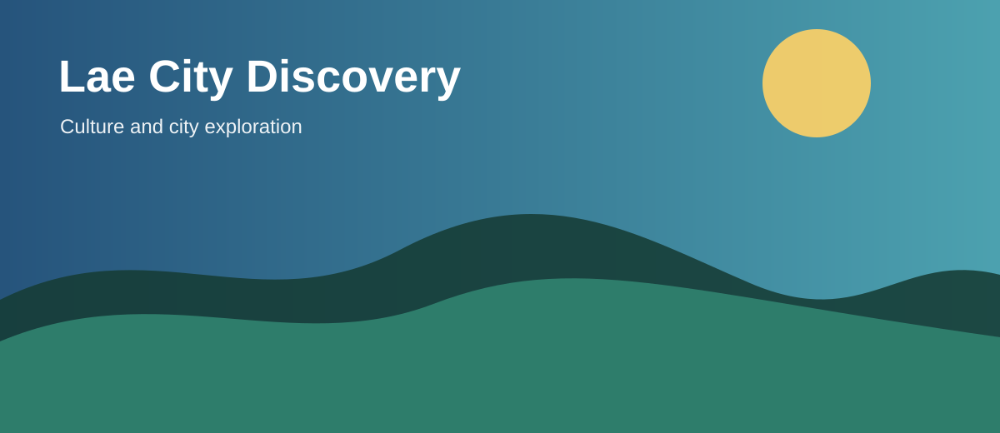
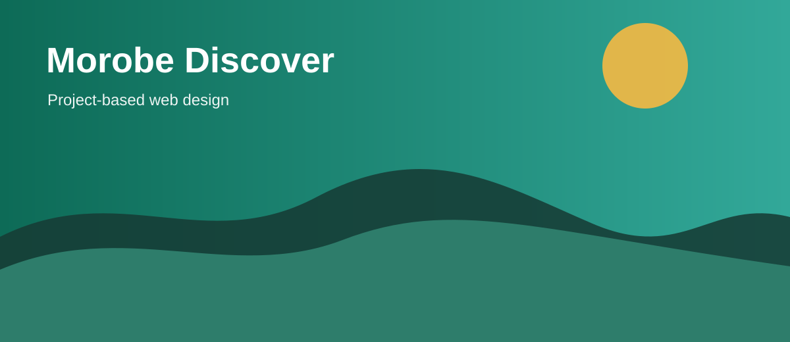

culture
Lae City Discovery
Markets, gardens and an introduction to Morobe’s urban gateway.
Lae · From K180
IS229 reference project
Explore demonstration destinations and build a sample trip plan while learning professional front-end web design.

Featured experiences

Markets, gardens and an introduction to Morobe’s urban gateway.
Lae · From K180

Coastal scenery and a relaxed seaside route.
Huon Gulf · From K420

Mountain scenery and an active highlands experience.
Wau · From K520